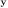

Next: Hopfield Network Up: ch10 Previous: Biological and Artificial Neural
Donald Hebb (1949) speculated that “When neuron A repeatedly and persistently takes part in exciting neuron B, the synaptic connection from A to B will be strengthened.” In other words, simultaneous activation of neurons leads to pronounced increases in synaptic strength between them, or “neurons that fire together wire together; neurons that fire out of sync, fail to link".
For example, the well known classical conditioning (Pavlov, 1927) could be explained by Hebbian learning. Consider the following three patterns (see here):
The Hebbian network is based on this theory to model the associative
or Hebbian learning to establish the association between two sets of
patterns
and
.
This is a 2-layer network with  nodes in the input layer
nodes in the input layer
![${\bf x}=[x_1,\cdots,x_n]^T$](img44.svg) and
and  nodes in the output layer
. Each output node is fully connected to
all input nodes:
nodes in the output layer
. Each output node is fully connected to
all input nodes:
| or | (11) |

The Hebbian learning law is:
| (12) |
| (13) |
 is the learning rate, a parameter that controls how fast
the weights get modified. The reasoning for this learning law is that when
both
is the learning rate, a parameter that controls how fast
the weights get modified. The reasoning for this learning law is that when
both  and
and  are high (activated), the weight (synaptic
connectivity) between them is enhanced according to Hebb's theory.
are high (activated), the weight (synaptic
connectivity) between them is enhanced according to Hebb's theory.
This is a supervised learning composed of the following two stages:
 pairs of patterns
based on the learning law:
pairs of patterns
based on the learning law:
| (14) |
 pairs of patterns:
pairs of patterns:
| (15) |
 is presented
to the network, it produces the output:
is presented
to the network, it produces the output:
| (16) |
To interpret the output pattern , we first consider the ideal case where the following two conditions are satisfied:
patterns  's are orthogonal to each other, i.e.,
they are totally uncorrelated to each other:
's are orthogonal to each other, i.e.,
they are totally uncorrelated to each other:
| (17) |
 is the angle between vectors
is the angle between vectors  and ,
representing how much the two vectors are similar or correlated to each
other:
and ,
representing how much the two vectors are similar or correlated to each
other:
| (18) |
and
treated as random variables
and are positively
correlated ( iff
)
and are not correlated
and are negatively
correlated ( iff
)
different patterns (as there can be no more than orthogonal vectors in
an n-D space).
If these conditions are true, then the response of the network to
will be
| (19) |
 and has been established for all
.
In non-ideal cases, the summation term is non-zero and there is an error
.
and has been established for all
.
In non-ideal cases, the summation term is non-zero and there is an error
.